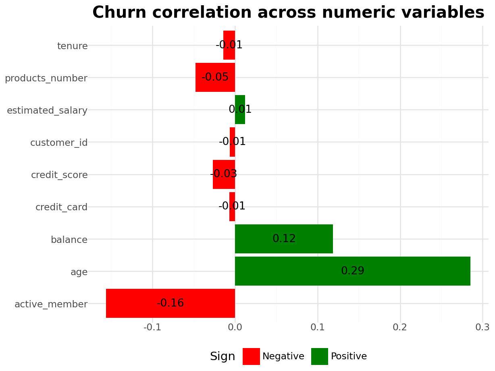
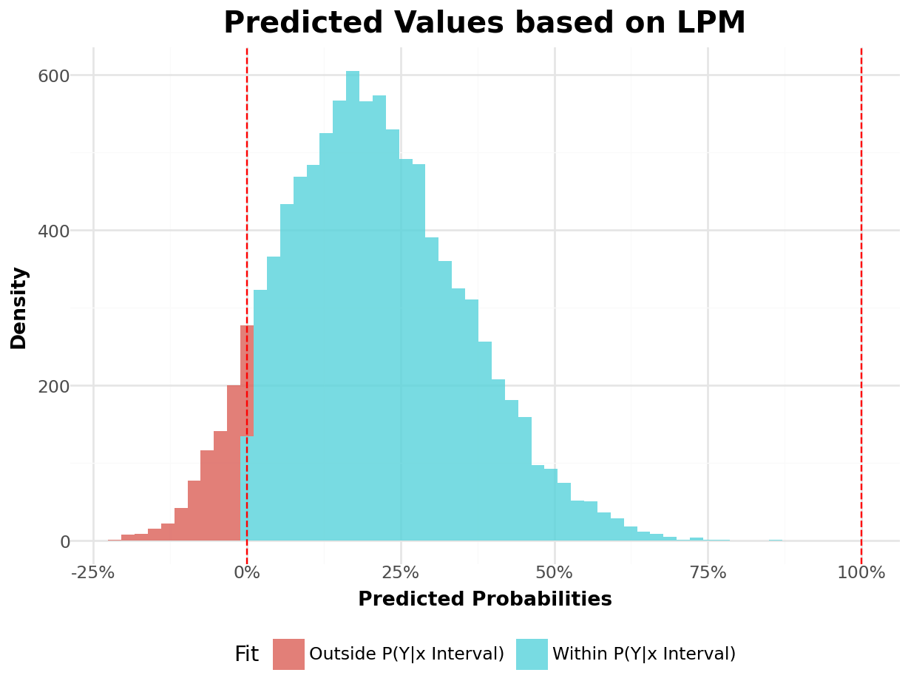
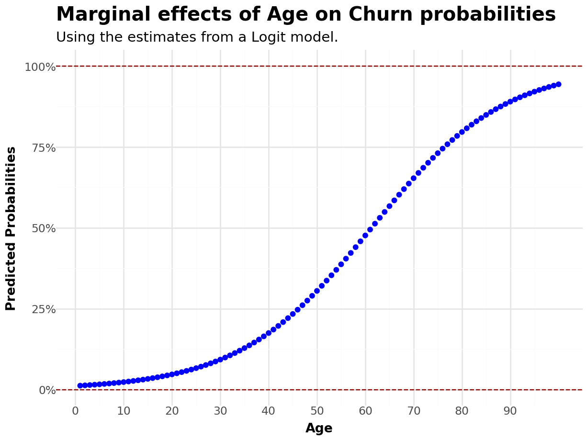
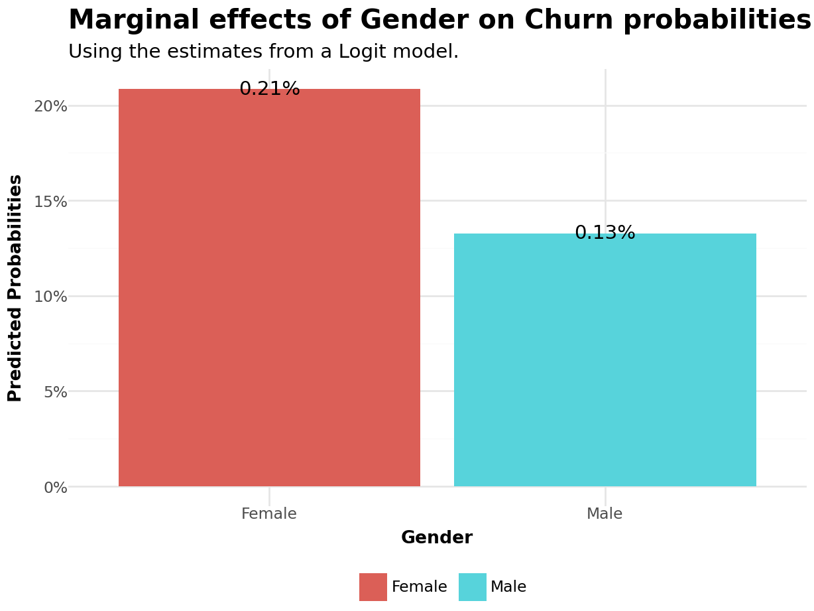
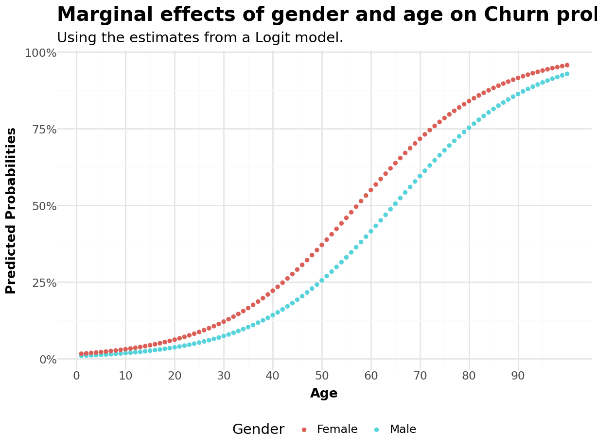
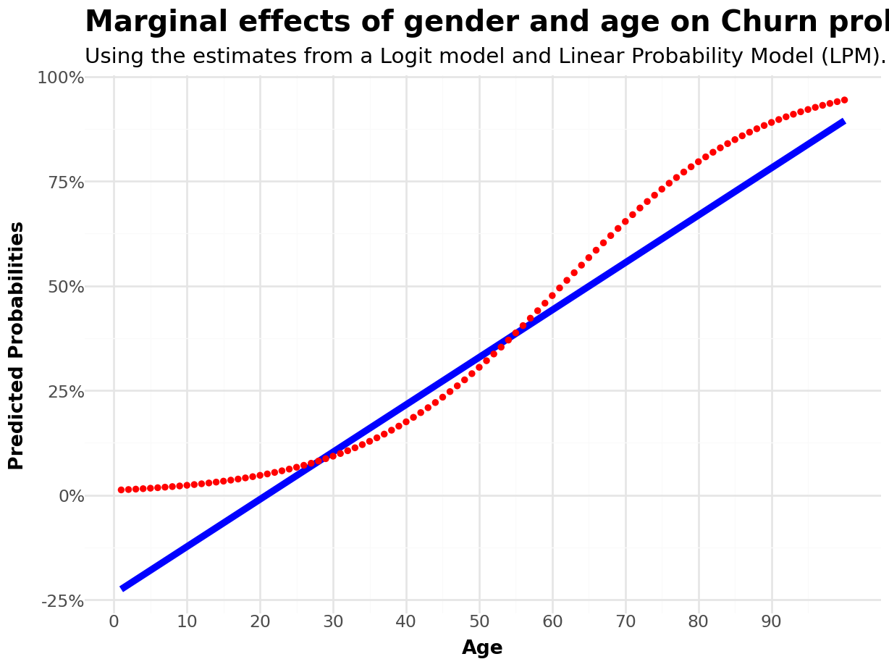

#Use knitrWelcome to the course!
How to use these slides
These slides leverage Quarto, an open-source scientific and technical publishing system from Posit (formerly RStudio):
- Create dynamic content with Python, R, Julia, and Observable
- Publish reproducible, production quality articles, presentations, dashboards, websites, blogs, and books in HTML, PDF, MS Word, ePub, and more
- Write using Pandoc markdown, including equations, citations, crossrefs, figure panels, callouts, advanced layout, and more.
For our course, we’ll use the following notation:
- Link will be colored in dark-orange
- Inline equations and variables will be rendered in
gray - Code chunks will be provided along with outputs (in
Python)
An example of a code chunk

# Generating data
np.random.seed(0)
dat = pd.DataFrame({
'cond': np.repeat(['A', 'B'], 10),
'xvar': np.arange(1, 21) + np.random.normal(0, 3, 20),
'yvar': np.arange(1, 21) + np.random.normal(0, 3, 20)
})
theme_plots= theme(
legend_position='bottom',
axis_title=element_text(face='bold',size=10),
plot_title=element_text(face='bold',size=15)
)
# Plotting
Plot=(
ggplot(dat,aes(x='xvar',y='yvar',fill='cond',color='cond'))+
geom_point()+
labs(
title = 'An example of charting using the plotnine package',
subtitle = 'Randomly generated data',
x = 'X Variable',
y = 'Y Variable')
+ scale_y_continuous(breaks = range(-10,25,5))
+ scale_x_continuous(breaks = range(-10,25,5))
+ theme_minimal()
+ theme_plots
)
Plot.show()Course Outline
We’ll cover the first section of course, which contemplates choice models:
- Binary Response Models: Logit/Probit
- Multi-choice Models: Multinomial Logit
- Economic Implications of multi-choice models
- Market-basket Analysis
We’ll keep a hands-on approach to be best of our capabilities, with handout exercises (code + analysis) and focus on practical applications
Evaluation (first section) will consist of:
- Code coursework (DataCamp)
- Handout Exercise (deadline TBD)
You can download a notebook covering this first lecture using this link and the dataset using here
References
- Our first section of the Marketing Analytics course will focus on the main applications from a practical standpoint
- For a detailed discussion on the methodological approaches undertaken throughout the lectures, we’ll follow:
- Discrete Choice Methods with Simulation - @Train
- Econometric Analysis - @Greene
- Econometrics - @Hayashi
- For a broader discussion around the practical applications on Marketing, we’ll follow @Chapman
Discrete Choice Models
Marketing practitioners are often concerned about consumers decisions around a defined set of choices:
Consumers choose between a binary decision of buy/not buy, given product, consumer, and environmental characteristics
Faced with a defined set of products, make a decision around which products to buy
After experiencing a flow of consumption from a product or service up to time \(t\), decide whether to continue consumption at \(t+1\) or churn
Eliciting knowledge about individual choices shed light on consumer preferences and help marketers to understand how consumers value certain product attributes
Aggregating individual choices helps marketers understand how the demand curve for a given product or industry works
Binary Choice Models
- Motivation: among a defined set of two mutually exclusive alternatives, consumers make a decision by choosing one alternative in spite of the other:
. . .
\[ \small Y_i=\begin{cases} 1, & \text{if $Y_i$ = a predefined alternative}\\ 0, & \text{otherwise} \end{cases} \]
- These models implicitly tell about consumer’s preferences regarding several consumption decisions. Say that we know that a set \(X\) of characteristics (which may be consumer-specific, environmental, or product) affect \(i\)’s decision. We can then model such decision by:
. . .
\[ \small Y_i=f(X_i) \]
- Our starting point will be to define what \(f(X)\) should look like. Depending on the shape of this function, the interpretation becomes a probabilistic measurement
Binary Choice Models - Application
One of the most widely applicable areas of binary choice modeling refers to churn modeling: the the percentage of customers who discontinue their use of a business’s products or services over a certain time period
This concept is important for businesses because it affects their revenue and offers insights into customer satisfaction and loyalty:
A high churn rate may suggest there are issues with the product, service, or overall customer experience
A low churn rate may suggest the existence of customer loyalty, high switching costs, or valuable attributes from the offer
Churn modeling offers valuable insights to marketers as it is possible to derive actions ex-ante its occurrence and prevent customers from churning
This issue becomes more relevant when customer acquisition costs increase
Practical Application Outline
You will use a bank Customer Relationship Manager (CRM) data set comprising of 10,000 bank customers and its actual engagement status (whether or not he/she has churned)
This data set will be primarily based on this Kaggle notebook, although some adaptations have been made for teaching purposes
Before we start: tech-setup
We’ll be running code both using
PythonAll outputs will be shown in the first tabset, with their corresponding code in the subsequent tabsets.Before you start, ensure you have installed all the necessary packages: to install all necessary
Pythonlibraries, use the terminal to install and thenimportall packages inside a notebook:
. . .
pip install requirements.txtVariable Descriptives
- To begin our investigation, let’s do a simple variable description of the variables that we have in our dataset:
. . .
# Read the CSV file into a pandas DataFrame
Data = pd.read_csv('Assets/bank-dataset.csv')
Summary = Data.drop('customer_id',axis=1).describe().reset_index()
# Print the structure of the DataFrame
Table = (
GT(Summary)
.cols_align('center')
.tab_header(title=md("**Summary Statistics**"))
.tab_stub('index')
.fmt_number(columns=['credit_score','age','tenure'],decimals = 0)
.fmt_number(columns=['products_number','credit_card','active_member','churn'],decimals = 2)
.fmt_currency(columns=['balance','estimated_salary'],decimals=0)
.opt_stylize(style=1,color='red')
)
#Output
Table| Summary Statistics | |||||||||
|---|---|---|---|---|---|---|---|---|---|
| credit_score | age | tenure | balance | products_number | credit_card | active_member | estimated_salary | churn | |
| count | 10,000 | 10,000 | 10,000 | $10,000 | 10,000.00 | 10,000.00 | 10,000.00 | $10,000 | 10,000.00 |
| mean | 651 | 39 | 5 | $76 | 1.53 | 0.71 | 0.52 | $100 | 0.20 |
| std | 97 | 10 | 3 | $62 | 0.58 | 0.46 | 0.50 | $58 | 0.40 |
| min | 350 | 18 | 0 | $0 | 1.00 | 0.00 | 0.00 | $0 | 0.00 |
| 25% | 584 | 32 | 3 | $0 | 1.00 | 0.00 | 0.00 | $51 | 0.00 |
| 50% | 652 | 37 | 5 | $97 | 1.00 | 1.00 | 1.00 | $100 | 0.00 |
| 75% | 718 | 44 | 7 | $128 | 2.00 | 1.00 | 1.00 | $149 | 0.00 |
| max | 850 | 92 | 10 | $251 | 4.00 | 1.00 | 1.00 | $200 | 1.00 |
# Read the CSV file into a pandas DataFrame
Data = pd.read_csv('Assets/bank-dataset.csv')
Summary = Data.drop('customer_id',axis=1).describe().reset_index()
# Print the structure of the DataFrame
Table = (
GT(Summary)
.cols_align('center')
.tab_header(title=md("**Summary Statistics**"))
.tab_stub('index')
.fmt_number(columns=['credit_score','age','tenure'],decimals = 0)
.fmt_number(columns=['products_number','credit_card','active_member','churn'],decimals = 2)
.fmt_currency(columns=['balance','estimated_salary'],decimals=0)
.opt_stylize(style=1,color='red')
)
#Output
TableAnalyzing churn distribution
# Select numeric columns and calculate correlation with churn
correlation_df = (
Data
.select_dtypes(include='number')
.corr()
.iloc[:-1, -1]
.reset_index()
)
# Rename columns
correlation_df.columns = ['Variable', 'Correlation']
# Add 'Sign' column based on correlation values
correlation_df['Sign'] = correlation_df['Correlation'].apply(lambda x: 'Positive' if x > 0 else 'Negative')
#Chart
Plot = (
ggplot(correlation_df, aes(x='Variable', y='Correlation', fill='Sign'))+
geom_col()+
geom_text(aes(label=correlation_df['Correlation'].round(2)),size=10, color='black',position=position_stack(vjust=0.5))+ # Add annotations
scale_fill_manual(values=['red','green'])+
coord_flip()+
labs(title='Churn correlation across numeric variables')+
theme_minimal()+
theme_plots +
theme(
axis_title_x=element_blank(),
axis_title_y=element_blank())
)
#Display Output
Plot.show()
# Select numeric columns and calculate correlation with churn
correlation_df = (
Data
.select_dtypes(include='number')
.corr()
.iloc[:-1, -1]
.reset_index()
)
# Rename columns
correlation_df.columns = ['Variable', 'Correlation']
# Add 'Sign' column based on correlation values
correlation_df['Sign'] = correlation_df['Correlation'].apply(lambda x: 'Positive' if x > 0 else 'Negative')
#Chart
Plot = (
ggplot(correlation_df, aes(x='Variable', y='Correlation', fill='Sign'))+
geom_col()+
geom_text(aes(label=correlation_df['Correlation'].round(2)),size=10, color='black',position=position_stack(vjust=0.5))+ # Add annotations
scale_fill_manual(values=['red','green'])+
coord_flip()+
labs(title='Churn correlation across numeric variables')+
theme_minimal()+
theme_plots +
theme(
axis_title_x=element_blank(),
axis_title_y=element_blank())
)
#Display Output
Plot.show()Modeling Discrete Choice Models
- Say that we are interested in modeling the occurrence of
churn, which is a discrete variable for each customer \(i\):
. . .
\[ Y_i= \begin{cases} 1, \text{if the customer has churned}\\ 0, \text{if the customer is still an active client} \end{cases} \]
- If we have a set of covariates, \(X_i\), then we can define the relationship:
. . .
\[ Y_i=f(X_i) \]
- How our \(f(X_i)\) should look like?
- What is the interpretation of the estimates that we’ll find?
Linear Probability Models (LPM)
- The simplest approach that we can take is to assume that \(Y\) is linear on the set of characteristics \(X\). In other words, \(f(X)\) is a linear model:
. . .
\[ Y_i= P(Y_i=1|X_i)=\alpha + \beta_1x_1+\beta_2x_2+...+\beta_nx_n+\varepsilon_i \]
We can then use Ordinary Least Squares (OLS) to model such relationship. Because the functional form of \(f(X)\) is assumed to be linear, we call this a linear probability model (LPM):
Because the relationship between \(Y\) and \(X\) is assumed to be linear, the changes in the probability (or likelihood) of
churnare linear on the parameters \(\beta\). For example, for \(x_1\):
. . .
\[ \dfrac{\partial Y}{\partial x_1}=\beta_1 \]
Is the LPM a biased estimator?
- If we believe that the OLS assumptions are valid, \(\beta\) is still a consistent estimator of the population average relationship between \(Y\) and \(X\), regardless of the type of dependent:
. . .
\[ \begin{align} & \beta_{OLS}=(X'X)^{-1}X'Y\\ & \beta_{OLS}=(X'X)^{-1}X'(X\beta+\epsilon)=\underbrace{(X'X)^{-1}(X'X)}_{I}\beta+(X'X)^{-1}X'\epsilon\\ & \beta_{OLS}=\beta + (X'X)^{-1}X'\epsilon \end{align} \]
- If we assume that \(X\perp\epsilon\) - i.e, no ommited variables-, we see that \(\beta_{OLS}\) is an unbiased estimator of the average effect of \(X\) on \(Y\):
. . .
\[ \text{if } X\perp\epsilon \rightarrow \beta_{OLS}=\beta + (X'X)^{-1}\underbrace{X'\epsilon}_{=0}\rightarrow \beta_{OLS}=\beta \]
Modeling churn via LPM
- Suppose we want to understand the determinants of customer’s churn over time. For that, we’ll consider the following variables:
. . .
\[ \text{if } X=\begin{bmatrix} CreditScore \\ D(Gender) \\ Age \\ Tenure \\ Balance \\ \#Products \\ D(CreditCard) \\ D(Active) \\ Salary \end{bmatrix} \rightarrow Y \sim X'\beta+\epsilon \]
LPM Estimation
OLS Regression Results
==============================================================================
Dep. Variable: churn R-squared: 0.136
Model: OLS Adj. R-squared: 0.135
Method: Least Squares F-statistic: 174.6
Date: Thu, 27 Mar 2025 Prob (F-statistic): 8.76e-309
Time: 19:20:45 Log-Likelihood: -4364.5
No. Observations: 10000 AIC: 8749.
Df Residuals: 9990 BIC: 8821.
Df Model: 9
Covariance Type: nonrobust
====================================================================================
coef std err t P>|t| [0.025 0.975]
------------------------------------------------------------------------------------
const -0.1025 0.034 -3.027 0.002 -0.169 -0.036
credit_score -9.264e-05 3.88e-05 -2.389 0.017 -0.000 -1.66e-05
gender_Male -0.0773 0.008 -10.267 0.000 -0.092 -0.063
age 0.0113 0.000 31.505 0.000 0.011 0.012
tenure -0.0018 0.001 -1.426 0.154 -0.004 0.001
balance 0.0007 6.31e-05 11.003 0.000 0.001 0.001
products_number -0.0043 0.007 -0.630 0.529 -0.018 0.009
credit_card -0.0030 0.008 -0.360 0.719 -0.019 0.013
active_member -0.1432 0.008 -19.016 0.000 -0.158 -0.128
estimated_salary 7.118e-05 6.52e-05 1.092 0.275 -5.66e-05 0.000
==============================================================================
Omnibus: 1513.285 Durbin-Watson: 1.994
Prob(Omnibus): 0.000 Jarque-Bera (JB): 2319.357
Skew: 1.176 Prob(JB): 0.00
Kurtosis: 3.176 Cond. No. 6.09e+03
==============================================================================
Notes:
[1] Standard Errors assume that the covariance matrix of the errors is correctly specified.
[2] The condition number is large, 6.09e+03. This might indicate that there are
strong multicollinearity or other numerical problems.# Read the CSV file into a pandas DataFrame
Data = pd.read_csv('Assets/bank-dataset.csv')
# Convert 'gender' into dummy variables
Data = pd.get_dummies(Data, columns=['gender'], drop_first=True)
# Define independent and dependent variables
X = Data[['credit_score', 'gender_Male', 'age', 'tenure', 'balance', 'products_number', 'credit_card', 'active_member', 'estimated_salary']]
y = Data['churn']
# Add a constant to the independent variables matrix for the intercept
X = sm.add_constant(X)
# Fit the linear regression model
model = sm.OLS(y, X.astype(float)).fit()
# Print the regression summary
print(model.summary())Overall analysis
- All else equal, an additional year increases the likelihood of churning by:
. . .
\[ \partial Y/\partial Age=\beta_{Age}\approx 0.0113 \]
- Moving from the \(25^{th}\) to the \(75^{th}\) percentile of
ageincreases the likelihood by \(\beta_{Age}\times IQR(Age)=(44-32)\times 0.0113 \approx 14\) or 14%
- Male customers tend to churn, on average, \(7.7\%\) less than Female customers:
. . .
\[ \partial Y/\partial D(genderMale)=\beta_{genderMale}\approx =-0.078 \]
- Similar analyses can be made for the following continuous variables (see Code in next slide)
Analyses
| Summary Statistics | |||
|---|---|---|---|
| Change in Covariate | Coefficient from OLS | Change on Outcome (in %) | |
| credit_score | 134 | −0.0001 | −1.24% |
| age | 12 | 0.0113 | 13.57% |
| tenure | 4 | −0.0018 | −0.74% |
| balance | 128 | 0.0007 | 8.86% |
| products_number | 1 | −0.0043 | −0.43% |
| estimated_salary | 98 | 0.0001 | 0.70% |
| gender_Male | 1 | −0.0773 | −7.73% |
| credit_card | 1 | −0.0030 | −0.30% |
| active_member | 1 | −0.1432 | −14.32% |
# Define continuous and dummy variables
continuous_vars = ['credit_score', 'age', 'tenure', 'balance', 'products_number', 'estimated_salary']
dummy_vars = ['gender_Male', 'credit_card', 'active_member']
# Get coefficient estimates from the model
estimates = model.params.reset_index()
estimates.columns = ['Variable', 'estimate']
# Calculate IQR for continuous variables
iqr_df = Data[continuous_vars].apply(lambda x: x.quantile(0.75) - x.quantile(0.25), axis=0)
iqr_df = pd.DataFrame({'Variable': iqr_df.index, 'Change': iqr_df.values})
# Create a DataFrame for dummy variables
dummy_df = pd.DataFrame({'Variable': dummy_vars, 'Change': 1})
# Combine continuous and dummy variable dataframes
combined_df = pd.concat([iqr_df, dummy_df])
# Merge with coefficient estimates
result_df = pd.merge(combined_df, estimates, on='Variable', how='left')
# Calculate partial changes
result_df['partial_change'] = (result_df['Change'] * result_df['estimate'])
#Table
Table= (
GT(result_df)
.cols_align('center')
.tab_stub(rowname_col='Variable')
.cols_label(
Change = 'Change in Covariate',
estimate = 'Coefficient from OLS',
partial_change = 'Change on Outcome (in %)'
)
.fmt_number(columns = 'Change',decimals=0)
.fmt_number(columns = 'estimate',decimals=4)
.fmt_percent(columns='partial_change',decimals=2)
.tab_header(title=md("**Summary Statistics**"))
.opt_stylize(style=1,color='red')
)
TableLimitations of the LPM
- Although a consistent estimator of the average effect, the LPM has limitations when it comes to its practical implications to binary outcomes:
Churn probabilities should lie within \([0,1]\), but the predicted probabilities, \(\hat{Y}\), have continuous support \((-\infty,+\infty)\). When the goal is to predict outcomes, this creates probabilities that are outside of the ranges
There is an implicit assumption that the effects are linear, which may not hold true. Example, an increase of $1,000 in customer’s income may have significant impacts on churn likelihood when customers are from the bottom of the income distribution, but the effects should dampen as we move towards the top of the income distribution
Heteroskedasticity
\(R^2\) is not well-defined
Limitations of the LPM
- Even though we can achieve consistent estimators, we’ll have heteroskedasticity in our estimates by construction. To see that, recall that the conditional expectation of Y given X is given by:
\[ \small E(Y|X)=\underbrace{[P(Y=1|X]}_{X\beta\times 1} + \underbrace{[1-P(Y=1|X)]\times 0}_{=0} = X\beta \]
- Given that the variance of a Bernoulli Distribution is given by \(p \times (1-p)\), then:
\[ V(Y|X)=P(Y|X)\times[1-P(Y|X)]=X\beta\times(1-X\beta) \text{, which clearly depends on } X \]
C:\Users\lucas\DOCUME~1\VIRTUA~1\R-RETI~1\Lib\site-packages\plotnine\stats\stat_bin.py:109: PlotnineWarning: 'stat_bin()' using 'bins = 57'. Pick better value with 'binwidth'.
In most linear probability models, \(R^2\) has no meaningful interpretation
Since the regression line can never fit the data perfectly if the dependent variable is binary and the regressors are continuous
Introducing non-linear binary models
Recall that the limitations of the LPM stem from the fact that \(f(X)=X'\beta\). It might be that a linear relationship does not capture all aspects that a churn analysis should have!
To that point, we need to think about a new relationship, \(Y=f(X)\), that fulfills the following points:
- The predicted outcomes, \(\hat{Y}\), lie between 0 and 1
- The effects do not need to be linear on the parameters
- Ideally, we’d want to apply a non-linear transformation in such a way that the relationship between Y and X is sigmoid (or S-shaped) curve: the changes in the predicted probability tend to go to zero as we approach the lower and upper bounds of the distribution of X
- The most known cases are logistic regression (\(f(x)=\Lambda (x)\)) and Probit (\(f(x)=\Phi(X)\))
Logistic Regression
Like any other transformation function, the idea behind using \(\Lambda(X)\) lies on the latent variable approach: think about an unobserved component, \(Y^\star\), which is a continuous variable, such as how much a consumer values a product.
Although we do not observe \(Y^\star\), we do observe the consumer’s decision of buying or not buying the product, depending on a given threshold:
. . .
\[ Y= \begin{cases} 1, \text{ if }Y^\star>0\\ 0, \text{ if }Y^\star\leq0\\ \end{cases} \]
- Therefore, we can see that the probability of buying depends on a latent variable, which is not observed by the econometrician:
. . .
\[ P(Y=1|X)=P(Y^\star>0|X)=P(\underbrace{X\beta+\varepsilon}_{Y^{\star}}>0|X) \]
Logistic Regression, continued
- We can rearrange terms and find that:
. . .
\[ P(Y=1|X)=P(\underbrace{X\beta+\varepsilon}_{Y^{\star}}>0|X)\rightarrow \underbrace{P(\varepsilon>-X\beta|X)\equiv P(\varepsilon<X\beta|X)}_{\text{Under Simmetry}} \]
- Therefore, this framework can be used to think about any cumulative density function which has the simmetry property. For the case of Logistic Regression, our transformation function that maps \(Y^\star\) (how much consumer values a good) to \(Y\) (decision to buy or not buy) is:
. . .
\[ f(Y^\star)=\Lambda(Y^\star)=\dfrac{\exp(X\beta)}{1+\exp(X\beta)} \]
- Estimation is made using Maximum Likelihood estimators.
Applying Logistic Regression
Optimization terminated successfully.
Current function value: 0.435323
Iterations 6 Logit Regression Results
==============================================================================
Dep. Variable: churn No. Observations: 10000
Model: Logit Df Residuals: 9990
Method: MLE Df Model: 9
Date: Thu, 27 Mar 2025 Pseudo R-squ.: 0.1388
Time: 19:20:46 Log-Likelihood: -4353.2
converged: True LL-Null: -5054.9
Covariance Type: nonrobust LLR p-value: 1.475e-296
====================================================================================
coef std err z P>|z| [0.025 0.975]
------------------------------------------------------------------------------------
const -3.4761 0.241 -14.397 0.000 -3.949 -3.003
credit_score -0.0007 0.000 -2.349 0.019 -0.001 -0.000
gender_Male -0.5429 0.054 -10.060 0.000 -0.649 -0.437
age 0.0729 0.003 28.561 0.000 0.068 0.078
tenure -0.0147 0.009 -1.585 0.113 -0.033 0.003
balance 0.0050 0.000 10.964 0.000 0.004 0.006
products_number -0.0362 0.046 -0.780 0.436 -0.127 0.055
credit_card -0.0290 0.059 -0.493 0.622 -0.144 0.086
active_member -1.0793 0.057 -18.860 0.000 -1.191 -0.967
estimated_salary 0.0005 0.000 1.060 0.289 -0.000 0.001
====================================================================================# Read the CSV file into a pandas DataFrame
Data = pd.read_csv('Assets/bank-dataset.csv')
# Convert 'gender' into dummy variables
Data = pd.get_dummies(Data, columns=['gender'], drop_first=True)
# Define independent and dependent variables
X = Data[['credit_score', 'gender_Male', 'age', 'tenure', 'balance', 'products_number', 'credit_card', 'active_member', 'estimated_salary']]
y = Data['churn']
# Add a constant to the independent variables matrix for the intercept
X = sm.add_constant(X)
# Fit the linear regression model
model = sm.Logit(y, X.astype(float)).fit()
# Print the regression summary
print(model.summary())Logit Properties #1: probabilities within the [0,1] interval
- One interesting thing to note is that, due to the properties of \(\Lambda(\cdot)\), our estimated probabilities will fall within \([0,1]\) depending on \(X\):
- When \(X\rightarrow\infty\), the probability of buying in our example tends to 1:
. . .
\[ \Lambda(Y)=\dfrac{\exp(Y)}{1+\exp(Y)}=\dfrac{\exp(X\beta)}{1+\exp(X\beta)}\rightarrow1 \]
- On the other hand, when \(X\rightarrow -\infty\), the probability of buying in our example tends to 0:
. . .
\[ \Lambda(Y)=\dfrac{\exp(Y)}{1+\exp(Y)}=\dfrac{\exp(X\beta)}{1+\exp(X\beta)}\rightarrow \dfrac{0}{1}=0 \]
Logit Properties #2: the odds-ratio
- Recall that the logit estimation for \(\small P(Y|X)\) is given by:
. . .
\[ \small P(Y)=\dfrac{\exp(X\beta)}{1+\exp(X\beta)},\text{ which we will call by } p \]
- Looking at the inverse, \(1/p\), we can see that:
. . .
\[ \small \dfrac{1}{p}=\dfrac{1+\exp(X\beta)}{\exp(X\beta)}=1+\dfrac{1}{\exp{X\beta}}\rightarrow \dfrac{1-p}{p}=\dfrac{1}{\exp{X\beta}} \]
- Inverting and taking logs on both sides, we’ll have:
. . .
\[ \small \log{\bigg(\dfrac{p}{1-p}}\bigg)=X\beta=\alpha+\beta_1x_1+\beta_2x_2+...\beta_kx_k \]
Logit Properties #2: the odds-ratio (continued)
- Therefore, whenever we’re estimating a logit model, our transformation function, \(\Lambda(\cdot)\) is actually estimating \(\small \dfrac{p}{1-p}\):
. . .
\[ \small logit(p)=\alpha+\beta_1x_1+\beta_2x_2+...\beta_kx_k \]
The term \(\small \dfrac{p}{1-p}\) is called odds-ratio, and is simply the ratio of the probability of success over the probability of failure
Hence, if we want to recover the impacts of any change in the odds-ratio due to our covariates, we can exponentiate our coefficients:
. . .
\[ \small \text{if } \log\bigg(\dfrac{p}{1-p}\bigg)=\alpha+\beta_1x_1+\beta_2x_2+...\beta_kx_k\rightarrow \dfrac{p}{1-p}=\exp(\alpha+\beta_1x_1+\beta_2x_2+...\beta_kx_k) \]
Logit Properties #2: the odds-ratio (continued)
- In previous slides, we noted that the effect of
Genderis \(\small\beta_2=-0.54\). Holding everything fixed, the odds-ratio betweenGender=1(Male) versusGender=0(Female) is given by:
\[ \small \dfrac{p}{1-p}=\exp(\beta_2)=\exp(-0.54)\approx0.58 \]
Put another way, the chances of being a churned client are \(\small 0.58-1=-0.42\) or 42% less likely for men!
Similarly, if we look at
Age(\(\beta_3=0.07\)), an increase of 1 year increases the churn probability by:
\[ \exp(\beta_1)=[\exp(0.0728688)-1]\approx 0.07 \text{ or } 7.55\% \]
| Summary Statistics | |||
|---|---|---|---|
| OddsRatio | Multiplier | ChangeOdds | |
| const | 3.09% | 1 | −96.91% |
| credit_score | 99.93% | 100 | −7.00% |
| gender_Male | 58.10% | 1 | −41.90% |
| age | 107.56% | 1 | 7.56% |
| tenure | 98.54% | 1 | −1.46% |
| balance | 100.51% | 10 | 5.10% |
| products_number | 96.45% | 1 | −3.55% |
| credit_card | 97.14% | 1 | −2.86% |
| active_member | 33.98% | 1 | −66.02% |
| estimated_salary | 100.05% | 100 | 5.00% |
# Calculate Odds Ratio and Change in Odds
odds_ratio = pd.DataFrame({
'OddsRatio': model.params.apply(lambda x: round(np.exp(x), 4)),
'Multiplier': [1, 100, 1, 1, 1, 10, 1, 1, 1, 100]
})
odds_ratio = odds_ratio.reset_index()
odds_ratio['ChangeOdds'] = ((odds_ratio['OddsRatio'] - 1) * odds_ratio['Multiplier']).map(lambda x: f"{x:.2%}")
#Table
Table = (
GT(odds_ratio)
.cols_align('center')
.tab_stub(rowname_col='index')
.cols_label(
OddsRatio = 'Odds Ratio',
Multiplier = 'Multiplier',
ChangeOdds = 'Change in Probality (in p.p)'
)
.fmt_number(columns = 'odds',decimals=0)
.fmt_percent(columns=['OddsRatio','ChangeOdds'],decimals=2)
.tab_header(title=md("**Summary Statistics**"))
.opt_stylize(style=1,color='red')
)
TableLogit Properties #3: different marginal effects
One of the caveats of LPM was that the marginal effect was constant, which does not make a lot of sense from a probabilistic sense
With Logit, the marginal effects are not equal to \(\beta\) anymore. To see that, take the derivative of \(P(Y|X)\) with respect to \(x_1\):
\[ \dfrac{\partial\Lambda(X\beta)}{\partial x_1}=\beta_1 \times\dfrac{\partial\Lambda(X\beta)}{\partial X\beta} \]
As we can see, the effects are not going to be linear anymore!
Put another way, given different levels of X, we may have different marginal effects on the probabilities - in what follows, we’ll analyze the case of
age
# Load data
data = pd.read_csv('Assets/bank-dataset.csv')
data['gender'] = np.where(data['gender'] == 'Male', 1, 0)
# Fit logistic regression model
X = data[['credit_score', 'gender', 'tenure', 'balance', 'products_number', 'credit_card', 'active_member', 'estimated_salary','age']]
X = sm.add_constant(X) # Add constant term for intercept
y = data['churn']
model = sm.Logit(y, X).fit()Optimization terminated successfully.
Current function value: 0.435323
Iterations 6# Set all other variables to the mean
new_data = X.drop(columns=['age']).mean(numeric_only=True).to_frame().transpose()
new_data = pd.DataFrame(np.repeat(new_data.values, 100, axis=0),columns=new_data.columns)
age_df = pd.DataFrame(pd.Series(range(1, 101)), columns=['age'])
# Concatenate with your existing DataFrame
concatenated_df = pd.concat([new_data, age_df], ignore_index=True,axis=1)
concatenated_df.columns=[*new_data.columns,'age']
# Predict on the new data
predicted_df = pd.DataFrame({
'Age': age_df['age'],
'Predicted': model.predict(concatenated_df)
})
# Plot
Plot = (
ggplot(predicted_df,aes(x='Age',y='Predicted'))+
geom_point(color='blue')+
geom_hline(yintercept=[0,1],linetype='dashed',color='darkred')+
scale_y_continuous(labels = percent_format())+
scale_x_continuous(breaks = range(0,100,10))+
labs(
title ='Marginal effects of Age on Churn probabilities',
subtitle = 'Using the estimates from a Logit model.',
x = 'Age',
y = 'Predicted Probabilities')+
theme_minimal()+
theme_plots
)
Plot.show()
# Load data
data = pd.read_csv('Assets/bank-dataset.csv')
data['gender'] = np.where(data['gender'] == 'Male', 1, 0)
# Fit logistic regression model
X = data[['credit_score', 'gender', 'tenure', 'balance', 'products_number', 'credit_card', 'active_member', 'estimated_salary','age']]
X = sm.add_constant(X) # Add constant term for intercept
y = data['churn']
model = sm.Logit(y, X).fit()
# Set all other variables to the mean
new_data = X.drop(columns=['age']).mean(numeric_only=True).to_frame().transpose()
new_data = pd.DataFrame(np.repeat(new_data.values, 100, axis=0),columns=new_data.columns)
age_df = pd.DataFrame(pd.Series(range(1, 101)), columns=['age'])
# Concatenate with your existing DataFrame
concatenated_df = pd.concat([new_data, age_df], ignore_index=True,axis=1)
concatenated_df.columns=[*new_data.columns,'age']
# Predict on the new data
predicted_df = pd.DataFrame({
'Age': age_df['age'],
'Predicted': model.predict(concatenated_df)
})
# Plot
Plot = (
ggplot(predicted_df,aes(x='Age',y='Predicted'))+
geom_point(color='blue')+
geom_hline(yintercept=[0,1],linetype='dashed',color='darkred')+
scale_y_continuous(labels = percent_format())+
scale_x_continuous(breaks = range(0,100,10))+
labs(
title ='Marginal effects of Age on Churn probabilities',
subtitle = 'Using the estimates from a Logit model.',
x = 'Age',
y = 'Predicted Probabilities')+
theme_minimal()+
theme_plots
)
Plot.show()Logit Properties #4: different effects by categorical variables
Another interesting use case is to re-do the same analysis before, but now varying also on categorical variables
For example, what is the difference in the probability of buying by men and women?
In order to do that, we can set all continous variables to their means and compare the estimated probabilities for
gender=1(male) andgender=0(female)
Optimization terminated successfully.
Current function value: 0.435323
Iterations 6
# Load data
data = pd.read_csv('Assets/bank-dataset.csv')
data['gender'] = np.where(data['gender'] == 'Male', 1, 0)
# Fit logistic regression model
X = data[['credit_score', 'age', 'tenure', 'balance', 'products_number', 'credit_card', 'active_member', 'estimated_salary','gender']]
X = sm.add_constant(X) # Add constant term for intercept
y = data['churn']
model = sm.Logit(y, X).fit()
# Set all other variables to the mean
new_data = X.drop(columns=['gender']).mean(numeric_only=True).to_frame().transpose()
new_data = pd.DataFrame(np.repeat(new_data.values, 2, axis=0),columns=new_data.columns)
gender_df = pd.DataFrame(pd.Series(range(0, 2)), columns=['gender'])
# Concatenate with your existing DataFrame
concatenated_df = pd.concat([new_data, gender_df], ignore_index=True,axis=1)
concatenated_df.columns=[*new_data.columns,'gender']
# Predict on the new data
predicted_df = pd.DataFrame({
'Gender': gender_df['gender'],
'Predicted': model.predict(concatenated_df)
})
predicted_df['Gender'] = np.where(concatenated_df['gender'] == 1, 'Male', 'Female')
# Plot
Plot = (
ggplot(predicted_df,aes(x='Gender',y='Predicted',fill='Gender'))+
geom_col()+
geom_text(aes(label='Predicted'),format_string="{:.2f}%")+
scale_y_continuous(labels = percent_format())+
labs(
title ='Marginal effects of Gender on Churn probabilities',
subtitle = 'Using the estimates from a Logit model.',
x = 'Gender',
y = 'Predicted Probabilities',
fill = '')+
theme_minimal()+
theme_plots
)
Plot.show()Putting all together
We saw that women tend to churn, approximately, \(8\) percentage points more than men
Is this true across all levels of age? As age levels increase, the gap between men and women may become wider due to personal traits. On the other hand, it may be that gender differences are invariant to age
In order to do that, we can do a mix of the two last exercises:
- Set all continuous variables, with the exception of
age, to their means - Compare the estimated probabilities for
gender=1(male) andgender=0(female) - You should have \(200\) rows in your data frame
Optimization terminated successfully.
Current function value: 0.435323
Iterations 6
# Load data
data = pd.read_csv('Assets/bank-dataset.csv')
data['gender'] = np.where(data['gender'] == 'Male', 1, 0)
# Fit logistic regression model
X = data[['credit_score', 'tenure', 'balance', 'products_number', 'credit_card', 'active_member', 'estimated_salary','gender','age']]
X = sm.add_constant(X) # Add constant term for intercept
y = data['churn']
model = sm.Logit(y, X).fit()
# Set all other variables to the mean
new_data = X.drop(columns=['gender','age']).mean(numeric_only=True).to_frame().transpose()
new_data = pd.DataFrame(np.repeat(new_data.values, 200, axis=0),columns=new_data.columns)
gender_df = pd.DataFrame([*np.repeat(1,100,axis=0),*np.repeat(0,100,axis=0)], columns=['gender'])
age_df = pd.DataFrame(pd.Series(range(1, 101)), columns=['age'])
age_df =pd.concat([age_df,age_df],ignore_index=True,axis=0)
# Concatenate with your existing DataFrame
concatenated_df = pd.concat([gender_df, age_df], ignore_index=True,axis=1)
concatenated_df = pd.concat([new_data,concatenated_df], ignore_index=True,axis=1)
concatenated_df.columns=[*new_data.columns,'gender','age']
# Predict
predicted = model.predict(concatenated_df)
concatenated_df['Predicted'] = predicted
concatenated_df['Gender'] = np.where(concatenated_df['gender'] == 1, 'Male', 'Female')
# Plot
Plot = (
ggplot(concatenated_df,aes(x='age',y='Predicted',fill='Gender'))+
geom_point(stroke=0,size=2)+
scale_y_continuous(labels = percent_format())+
scale_x_continuous(breaks = range(0,100,10))+
labs(
title ='Marginal effects of gender and age on Churn probabilities',
subtitle = 'Using the estimates from a Logit model.',
x = 'Age',
y = 'Predicted Probabilities',
fill = 'Gender')+
theme_minimal()+
theme_plots
)
Plot.show()Comparison across LPM and Logit estimations
We came across two estimators for binary choice models. Do they differ in terms of the responses?
Although the coefficients from the different models are not directly comparable, we can use them to understand what are the partial effects:
For both cases, we’ll use all the other variables at their sample mean values:
- For LPM, the effect will be a slope, i.e., the marginal change depending on
Agewill be constant - For Logit, the change in the predicted probability will vary depending on the
Agereference point
- For LPM, the effect will be a slope, i.e., the marginal change depending on
Comparing across LPM and Logit estimations - age
Optimization terminated successfully.
Current function value: 0.435323
Iterations 6
# Read the CSV file into a pandas DataFrame
Data = pd.read_csv('Assets/bank-dataset.csv')
# Convert 'gender' into dummy variables
Data = pd.get_dummies(Data, columns=['gender'], drop_first=True)
# Define independent and dependent variables
X = Data[['credit_score', 'gender_Male', 'tenure', 'balance', 'products_number', 'credit_card', 'active_member', 'estimated_salary','age']]
y = Data['churn']
# Add a constant to the independent variables matrix for the intercept
X = sm.add_constant(X)
# Fit the linear regression model and the logit model
lm_model = sm.OLS(y, X.astype(float)).fit()
logit_model = sm.Logit(y, X.astype(float)).fit()
# Set all other variables to the mean
new_data = X.drop(columns=['age']).mean(numeric_only=True).to_frame().transpose()
new_data = pd.DataFrame(np.repeat(new_data.values, 100, axis=0),columns=new_data.columns)
age_df = pd.DataFrame(pd.Series(range(1, 101)), columns=['age'])
# Concatenate with your existing DataFrame
concatenated_df = pd.concat([new_data,age_df], ignore_index=True,axis=1)
concatenated_df.columns=[*new_data.columns,'age']
# Predict
lm_predicted = lm_model.predict(concatenated_df)
logit_predicted = logit_model.predict(concatenated_df)
predicted_df = pd.DataFrame({
'LPM': lm_predicted,
'Logit': logit_predicted,
'Age': age_df['age']
})
# Plot
Plot = (
ggplot(predicted_df,aes(x='Age'))+
geom_line(aes(y='LPM'),color='blue',size=2)+
geom_point(aes(y='Logit'),color='red',stroke=0,size=2)+
scale_y_continuous(labels = percent_format())+
scale_x_continuous(breaks = range(0,100,10))+
labs(
title ='Marginal effects of gender and age on Churn probabilities',
subtitle = 'Using the estimates from a Logit model and Linear Probability Model (LPM).',
x = 'Age',
y = 'Predicted Probabilities',
fill = 'Gender')+
theme_minimal()+
theme_plots
)
Plot.show()Comparison across LPM and Logit estimations (continued)
In the LPM model, the effect of
ageis always the same – intuitively, \(\beta_{Age}\), the partial derivative of Y with respect toAge, is the same for all levelsOn the other hand, the changes when looking at the Logit model vary depending on the reference point for
Age:- For values $[0,20], it increases modestly
- Around [21,60], the changes are exponential
- Between [60,80], the changes start to become constant
- After 80, we see diminishing effects
Do these differences matter in practice? It depends on what you’re looking…
Comparison across LPM and Logit estimations (continued)
On the one hand, we clearly the weaknesses of the LPM when estimating probabilities for ages between \([0,20]\).
On the other hand, LPM and Logit will be almost identical between \([30,60]\)
If you tabulate the distribution of
Agein your dataset, you’ll see that although LPM does a poor job in predicting probabilities for cases <20, the sample proportion of these cases is less than 1%On the other hand, its results are approximately the same as of Logit between \([30,60]\), which constitutes approximately 80% of the sample
- Ok, do does it matter or not? Again, it depends…
Comparison across LPM and Logit estimations (continued)
- Logit or LPM?
If your interest is to use the model results to predict probabilities for different age brackets, then yes, you should use Logit (or any model with the similar properties)
If, on the other hand, you’re just interest in knowing the effects for the average person in your sample, you can use LPM
LPM is simpler, and we know very well the properties to analyze cases potential issues such as ommited variable bias
In the Logit world, there is no \(R^2\), but there are other ways to check the predictive ability and fit of models